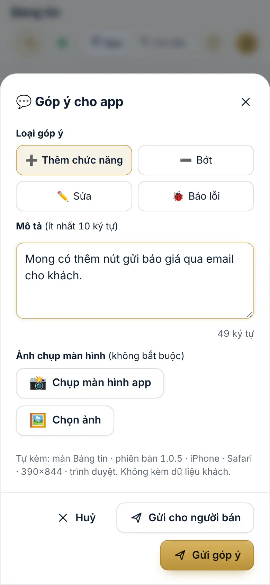
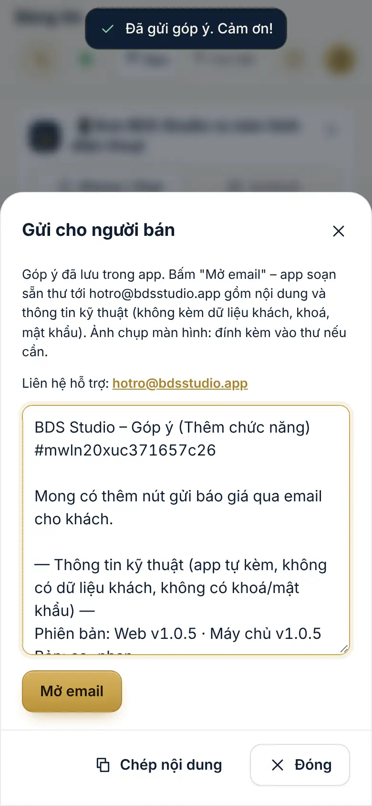

Góp ý và gói thử nghiệm
Gửi góp ý
- Bấm nút ✨ Trợ lý AI ở góc dưới bên phải (màn nào cũng có), rồi bấm Góp ý / Gửi cho người bán ở cuối khung trợ lý (cạnh link 📖 Hướng dẫn). Hoặc vào Cài đặt › Góp ý › Gửi góp ý mới.
Không thấy nút? Kéo màn lên một chút – nút tạm ẩn khi đang cuộn xuống hoặc khi che nội dung. - Chọn loại: ➕ Thêm chức năng, ➖ Bớt, ✏️ Sửa, 🐞 Báo lỗi.
- Gõ Mô tả (ít nhất 10 ký tự): muốn gì, hoặc lỗi xảy ra khi làm gì.
- Ảnh (tuỳ chọn): 📸 Chụp màn hình app hoặc 🖼️ Chọn ảnh. Che tên, số điện thoại khách trước khi gửi.

- Bấm một trong hai:
- Gửi góp ý – lưu trong app. Chủ/Quản trị xem ở Cài đặt › Góp ý, đổi trạng thái (Mới, Đang xem, Sẽ làm, Đã làm, Không làm) để người gửi biết.
- Gửi cho người bán – lưu trong app và soạn sẵn email tới bộ phận hỗ trợ. Bấm Mở email rồi gửi (hoặc Chép nội dung).

App tự kèm tên màn, phiên bản, loại máy. Không kèm dữ liệu khách, khoá, mật khẩu.
Gói thử nghiệm
Gói Cơ bản luôn có và đủ cho việc hằng ngày. Các gói mở rộng sẽ lần lượt ra mắt: gói nào người bán mở sẽ hiện ở Cài đặt › Gói chức năng. Chưa có gói nào mở thì màn đó chỉ có Gói Cơ bản.
Gói đang thử nghiệm không tự tải về. Muốn trải nghiệm một gói:
- Vào Cài đặt › Gói chức năng. Thẻ gói ghi Gói đang thử nghiệm.
- Bấm ✉️ Yêu cầu trải nghiệm – app ghi yêu cầu kèm tên gói và soạn sẵn email tới bộ phận hỗ trợ; bấm Mở email rồi gửi.
App báo Đã gửi yêu cầu trải nghiệm gói …. - Khi có mã, bấm 🔑 Nhập mã ngay trên thẻ gói, dán mã, bấm Kích hoạt.
Thẻ gói ghi Trải nghiệm đến dd/mm/yyyy. - Bấm ⬇️ Tải về. Gói cài xong có công tắc Đang bật và nút Gỡ. Áp dụng cho mọi tài khoản trong app.
- Dùng gói, rồi bấm 💬 Góp ý gói này để góp ý riêng cho gói. Bản thử nghiệm có thể còn lỗi – dữ liệu của anh/chị vẫn an toàn.
Thời gian trải nghiệm: app đang dùng thử thì hết cùng lúc với thời gian dùng thử; đã có Gói Cơ bản thì tối đa 10 ngày.
Hết thời gian trải nghiệm: gói tạm khoá, dữ liệu giữ nguyên, thẻ gói lại có nút Yêu cầu trải nghiệm. Mua gói thì dùng tiếp ngay.
Gói đang bán có giá và nút Mua gói ngay trên thẻ (mở Cài đặt › Bản quyền).
Tắt hoặc gỡ gói chỉ ẩn menu của gói – dữ liệu giữ nguyên, bật lại là dùng tiếp.